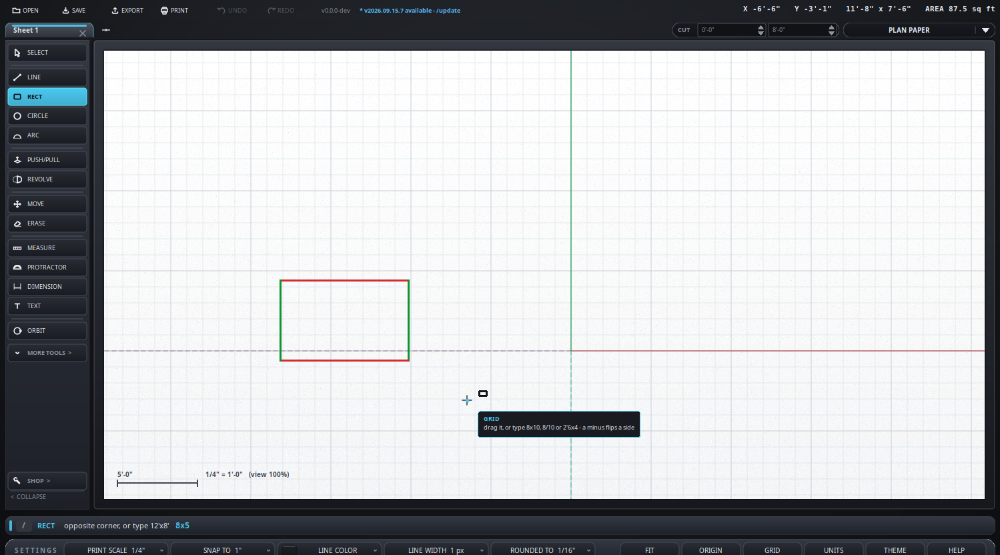

You can type instead of dragging, nearly everywhere.
6-8-15 is six foot eight and fifteen
sixteenths. Feet, then inches, then sixteenths - the way a truss drawing
writes a length, and the way the component design software the shops run
prints it. Every field is a whole number, there is no foot mark, inch mark
or slash anywhere in it, and the whole thing goes in from the number pad with
the minus key. 0-8-8 is eight and a half inches; that leading
nought for the feet is how a truss sheet writes anything under a foot.6-8-15x4-0-0, or
6-8-15/4-0-0 from the number pad.12-6, with one dash, is twelve foot six - the older, shorter
form of the same idea.Anywhere a length is typed, it can be worked out as it is typed. The
answer shows at the end of the typing box as you go - = 8'-8" -
and Enter uses it. Space is a space while you type, so a sum can be
written with them; Enter is what uses it.
The typing box, at the right of the command bar, colors what you type
so it can be read at a glance: the figures in amber, the foot and inch marks
in green, the operators of a sum - + --
* / and brackets - in pink, and the x
between two sizes in violet. The bar's second line is what the program
just said, with names, lengths, commands and keys picked out the same way;
right-click the bar to copy it.
| Typed | Is | Why |
|---|---|---|
8' + 8" | 8'-8" | plus |
8'24" + 3'4" | 13'-4" | 8'24" is ten foot - it always was |
10' - 3'4" | 6'-8" | a minus with a space either side |
6-8-0--2-4-0 | 4'-4" | two dashes are always a minus - truss on both sides, all from the number pad |
6-8-0+2-4-0 | 9' | truss adds too |
8'6"-3" | 8'-3" | a dash straight after an inch mark is a minus - a length never goes on past its inches |
10'-3'4" | 6'-8" | a dash after feet, with feet of its own on the other side, is a minus |
8'17" / 2 | 4'-8 1/2" | a slash is divide - unless it sits between two digits |
(8' + 4") * 2 | 16'-8" | times, and brackets first |
3 * 2'6" | 7'-6" | a plain number times a length |
8' + 2 | 10' | a plain number in a sum is feet, as a bare number always is |
What stays a length and is never a sum:
6'-8" and 6' - 8" - six foot eight, the way a dimension is written: feet, a dash, then inches with no foot mark. To take the inches off, give them their feet - 6' - 0'8" - or brackets, 6' - (8").6'-8 - six foot eight as well: no mark after the dash, so no sum.6-8-15 and 12-6 - truss notation, above: no marks at all.6 1/2" and 3/4" - a slash between two digits is a fraction.So a dash is a minus when it is two dashes (--), when it has a space either side, when
it comes straight after an inch mark, or when the other side has feet of its own. Two dashes is the one
to remember: truss notation never has two in a row, so -- is a minus whatever is either side of it, and
the whole sum goes in from the number pad. A length
times a length is an area, not a length, and is refused; so is dividing by nothing.

8x5 typed instead of dragging the other. The hint line says what forms it will take; Enter lands it.